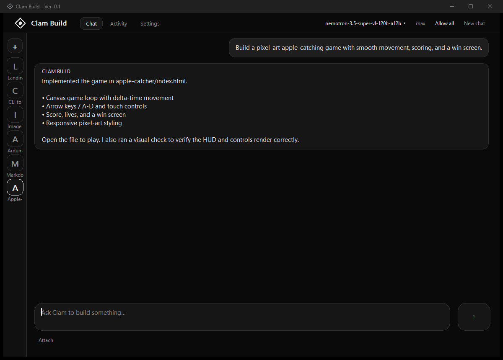
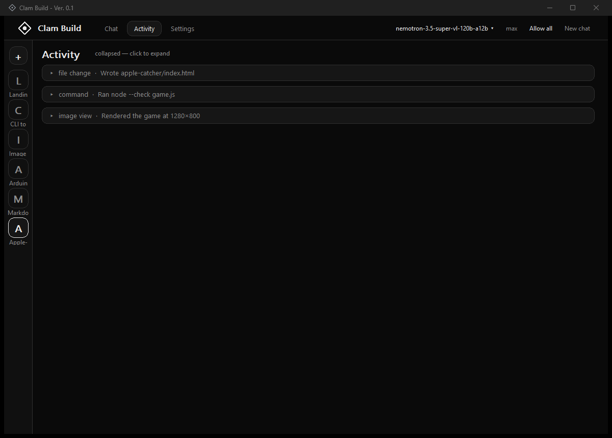
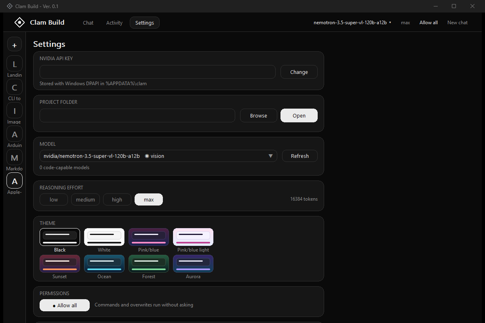

Agentic by default
Read and search files, write changes, run shell commands, fetch documentation, take visual checks, and keep going until the job is verified.
Early preview · Windows 10/11 x64
Point Clam Build at a project, describe what you want, and it reads, edits, runs, and verifies the work. One 3.5 MB executable — no Electron, no Python, no terminal required.
Ver. 0.1 · Free download · Bring your own NVIDIA API key

Built for real work
Clam is deliberately narrow: a native chat interface wrapped around an agent that can inspect a real project and act on it. No browser runtime, no bundled toolchain, no separate account.
Read and search files, write changes, run shell commands, fetch documentation, take visual checks, and keep going until the job is verified.
Custom-drawn with GDI+ and the Win32 API. Starts fast, stays light, and follows the system frame on Windows 10 and 11.
Use an NVIDIA NIM API key. The key is encrypted with Windows DPAPI and kept in %APPDATA%\clam, not in the repository.
Every conversation is saved as a JSON file under %APPDATA%\clam\chats. Reopen an older chat from the slide-out rail, even after a restart.
Black, White, Pink/blue, Pink/blue light, Sunset, Ocean, Forest, and Aurora. Rounded controls and a native frame follow the palette.
Defaults to Allow all for speed, or switch to Manual to approve shell commands and file overwrites before they run.
Paste screenshots, drag in image files, or let the agent capture a page with a headless Chrome visual check. Vision-capable models are marked in the picker.
Talk to ESP32 and Arduino boards through arduino-cli, or drop .luau plugins into your config folder to extend the agent.
A closer look
The transcript stays clean: replies arrive in cards, while commands and file changes collect in Activity. The saved-chat rail gets out of the way until you need it.


How it works
No orchestration layer to configure. Open a project, describe the outcome, and let the agent work in the folder you chose.
Paste an NVIDIA API key in Settings. It is encrypted with Windows DPAPI and stored locally.
Every file read, edit, command, and visual check happens inside the project you selected.
Follow the work in Chat and Activity. Approve actions in Manual mode, or let Allow all run.
Download
A single Windows executable. No installer, no bundled runtime, and no Clam account. Bring your own NVIDIA API key.
SHA-256 and release notes are published with each build.
arduino-cli for board toolsThis preview is unsigned, so Windows SmartScreen may show a warning. The full source is available if you prefer to build it yourself.